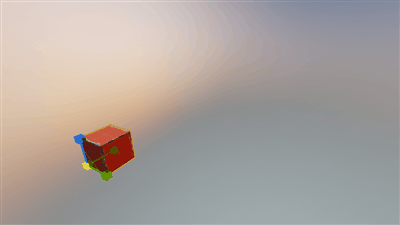

suppagam
I was looking at this free package for UE4: http://www.supergrid.io/
And I’ve noticed one interesting feature: the textures auto-adjust to the mesh scaling. Check this:

Instead of stretching the texture, it looks like it creates an UV in realtime. How is that done?